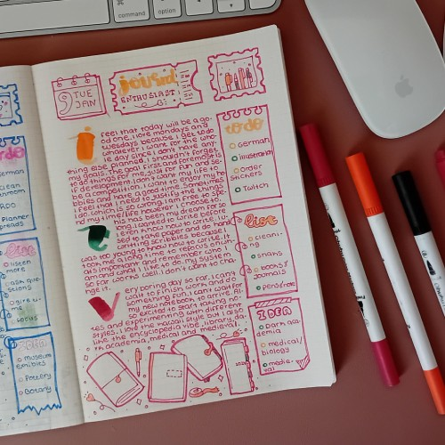

Journaling is my way of making sense of everything. Whether I’m reflecting on my day, mapping out ideas, or documenting a personal project, writing gives me space to pause and breathe. It’s not always pretty, but it’s honest. My journals are part diary, part sketchbook, part memory vault — and all mine.